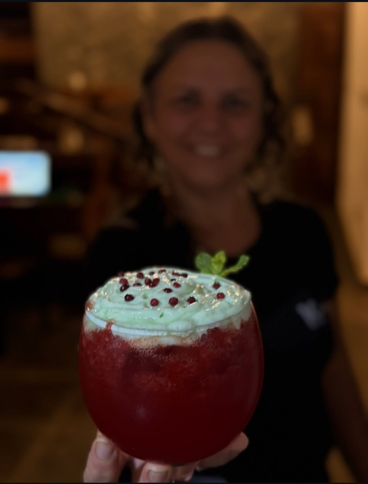
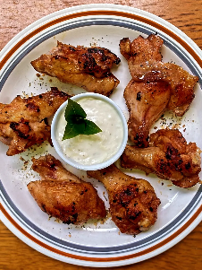
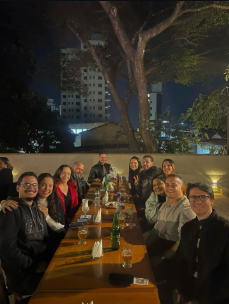

Ambiente sofisticado
Luz, música e energia na medida para brindar.

Fotos e vídeos para você sentir a vibe do Kasarão.
Luz, música e energia na medida para brindar.

Os melhores encontros começam com um bom brinde 🍻

Preparados com carinho — e com aquele toque do Kasarão.

Crocância, molho especial e mesa cheia.

Sobremesas artesanais para fechar a noite com chave de ouro.

O Kasarão é palco de momentos que ficam.
Chega mais: é vibe, é sabor, é experiência.

Refrescante, elegante e do seu jeito.
Dica: arraste no celular ou use as setas do teclado.